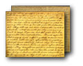

November 19,
A long hiatus again, so many things of absorbing interest. An item by the way from the Central Presbyterian. It is estimated that 142,000 Confederate soldiers have been converted as convicts since the war began. If human testimony can establish any thing it establishes this, that there has been a most wonderful work of grace in our army. How could a broader seal have been set upon the righteousness of our cause? The Lord has looked upon our affliction & our pain, & forgiven our sins, to a certain extent at least. I have gradually arrived at the firm persuasion that multitudes of our dying soldiers have been met by redeeming grace.
Mrs. Gilbert one of our neighbors died a few months since, & when dying, she exclaimed with delight "O there's Jimmy & Johnny." They had come for their departing mother. They were two of our young soldiers who had died not very long before from wounds received in battle. No one knew the state of their minds, but does not this circumstance support the hope that their pious mother's prayers had been answered for them? A similar instance, Jimmy Holladay when dying exclaimed "O there's father." These boys (the oldest was but just out of his teens) were excellent soldiers, went to the army at the first sound of the trumpet, & had never taken a furlough. Their bodies were brought home & buried in one grave. We all thought they deserved a monument & accordingly Ellen went around & soon collected about $500 for the purpose. It cannot be obtained however till after the war. Men are drawn off so closely that it is difficult to get a horse shod or a pair of shoes made or a stick of wood hauled. Then the most common articles are many of them exceedingly rare. But then if we do have to sit in the dark for nights except for an hour or so that the children are learning their lessons, & submit to multitudes of privations far greater than that, we do it cheerfully as the price in part of our liberty.

Return to the Emerson Diary